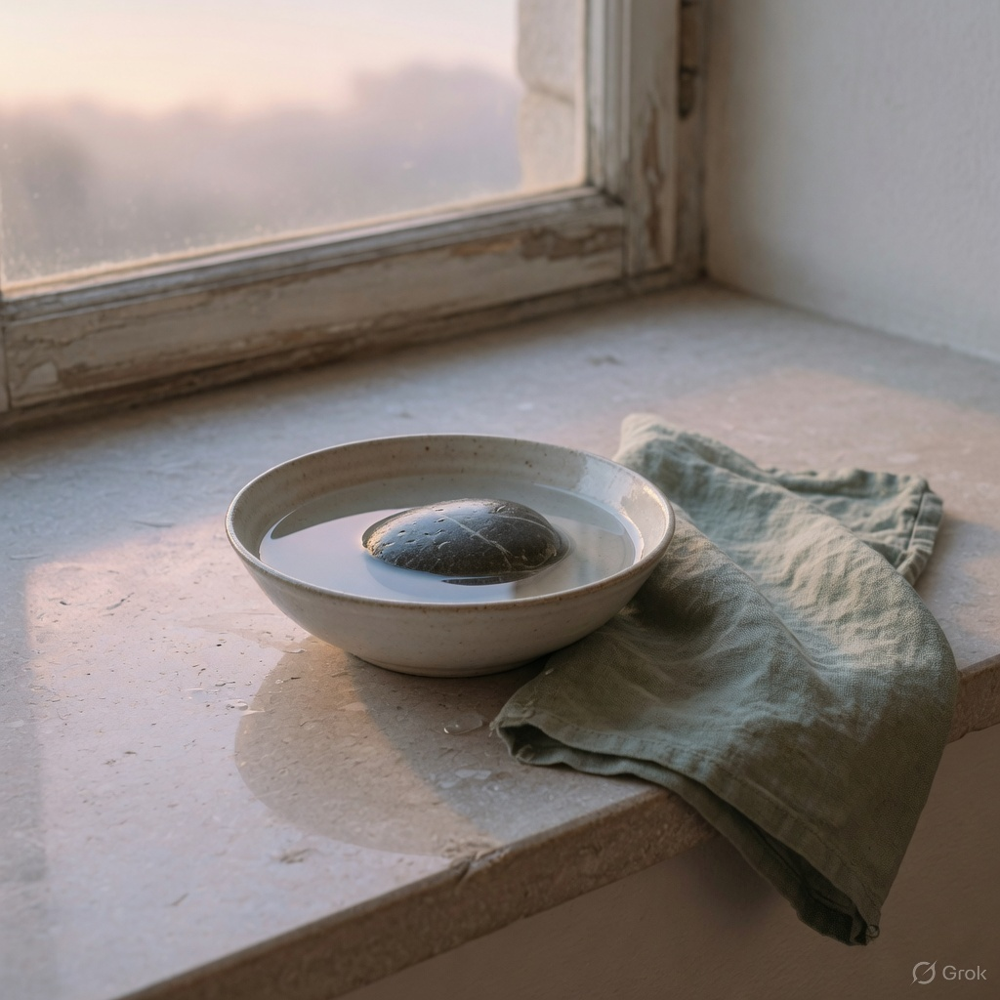
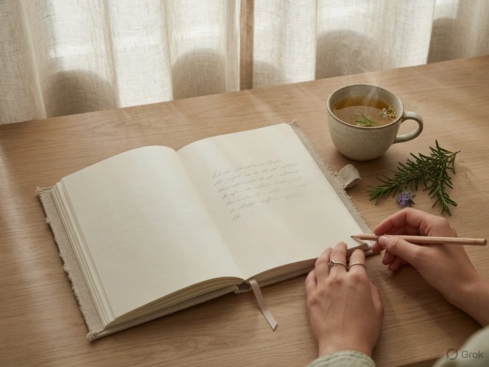

Breathe
Four counts in, four held, four out, four still. Repeat four times. That is the whole ritual.
Mental health is not a mood board. It is sleep, breath, cloth that does not scratch, and a few silent actions you can keep when the week is heavy. We design for that. We also keep a practice here, free, whether you buy a garment or not.

The four breaths
Inhale four · hold four · exhale four · rest four
Box breathing is used by people who need the body to come back online. Sit. Soften the jaw. Follow the orb. If it feels like too much, stop. This is a tool, not a test, and it is not therapy.
Tagless necks, dropped shoulders, breathable flax and cotton — less sensory noise on the skin.
Every first order includes the Quiet Hour journal. Ten minutes. One page. No performance.
5% of each order goes to community mental health groups. The garment funds the practice beyond you.
Four counts in, four held, four out, four still. Repeat four times. That is the whole ritual.
One sentence: what is one silent action I can take today? Mend, walk, drink water, text someone, sit.
Put on the softest thing you own. Notice the body. The point is contact, not a photograph.
Water before the phone.
Step outside for one full breath of actual air.
Fold or mend one garment with both hands on it.
Send one kind message and put the phone in another room for ten minutes.
Name one feeling out loud. Then let it be unnamed again.
